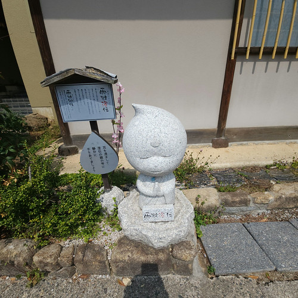
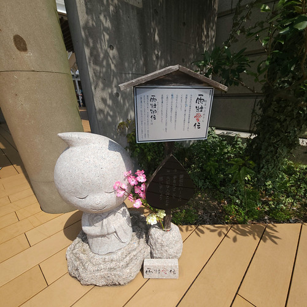
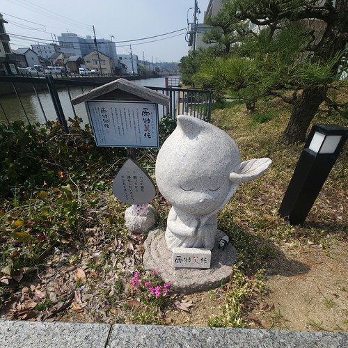
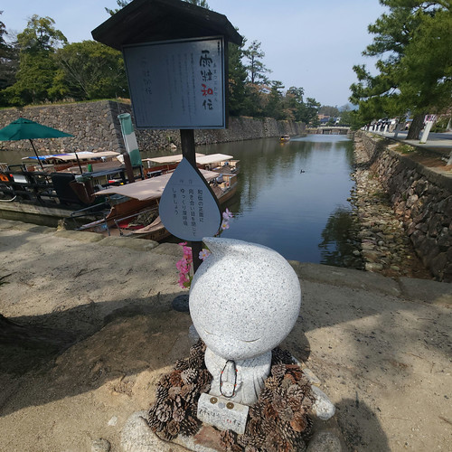
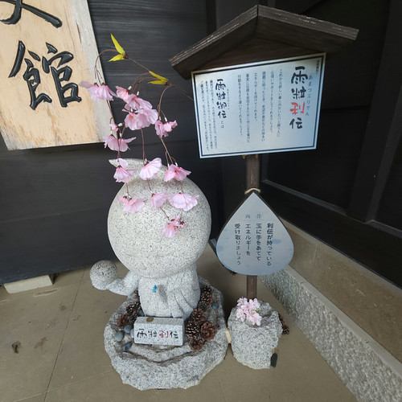
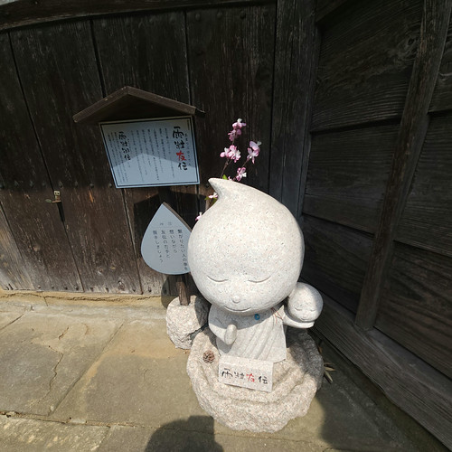
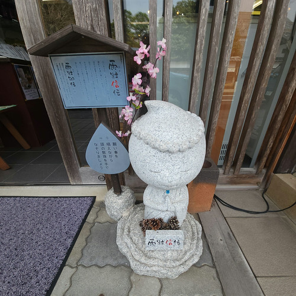
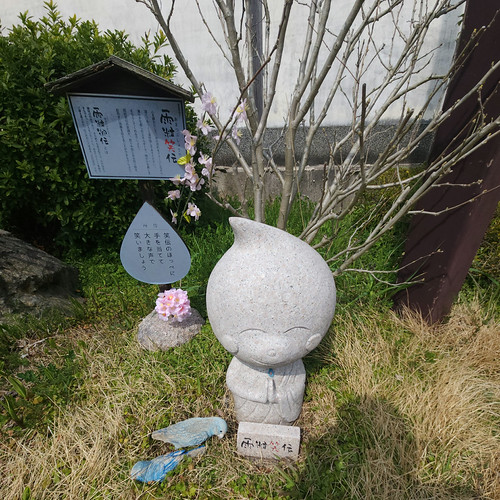
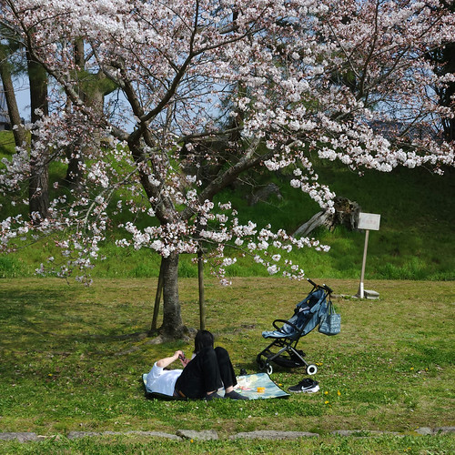
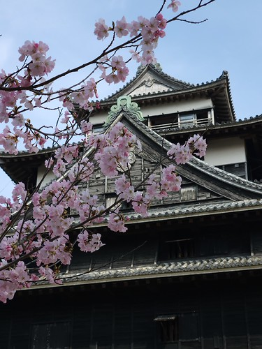

雨粒御伝を巡る（お散歩カメラ 2026-03-29）

このブログでは久しぶりのお散歩カメラ。 最近は pckt や Leaflet で主に書いているから。
先日 pckt のほうに書いたが「雨粒御伝」なんてのが設置されているらしい。 全部で8体。 というわけで今回は8体の雨粒御伝を巡るお散歩に出かけることにした。
雨粒御伝 を巡る
雨粒の形をした石像「雨粒御伝 (あまつぶおんでん)」は、年中雨の多い松江市の観光を盛り上げるために作られました。
雨粒御伝は、利伝さん・笑伝さん・和伝さん・美伝さん・愛伝さん・友伝さん・澄伝さん・信伝さんの 8 体あり、平成 25 年 11 月から松江城を巡る堀川沿いに設置されています。
「御伝」とは、松江の魅力を伝える “伝道師” として意味を込めた造語で、松江市在住のミュージシャン浜田真理子さんによって名付けられました。
今回は松江駅からスタートし，松江大橋を渡り，松江城のお堀沿いをぐるっと周って，最後は地ビール館に至るルートで歩くことにした。 では，出発しよう。
雨粒澄伝

松江大橋北詰，旅館「大橋館」前に設置されている。 地元の旅館とか用がないからなぁ。 最初「大橋館って何だっけ？」ってググっちまったよ（笑）
雨粒愛伝

カラコロ工房前に設置されている。 最近は徒歩で通りかかることが多いのに全く気が付かなかったよ。 注意力散漫だなぁ。
雨粒美伝

島根県市町村振興センター近くに設置されている。 雨粒御伝シリーズで最初に見つけたのがこれ。
雨粒和伝

堀川遊覧船の大手前堀川遊覧船乗場近くに設置されている。 ここも用がない。 でもなんで松ぼっくり？
雨粒利伝

松江歴史館前に設置されている。 ここには一度入ったが，やはり全く気づかず。 どこを見て歩いているのやら（笑）
雨粒友伝

武家屋敷の近く（といってもだいぶ離れてるけど）に設置されている。 自転車で通過したことしかない。 気が付かなくても無理ないよね（言い訳）
雨粒信伝

ありゃ Google Maps には載ってないな。 八雲記念館前の交差点付近の土産物屋の前に設置されている。 自力で探しなはれ（笑） もちろん観光客向けの土産物屋などスルーなので気がつかなかった。
雨粒笑伝

地ビール館奥隣り，遊覧船乗場近くに設置されている。 足元に倒れてる鳥が微妙にリアルでこえーよ。 触れねーよ。
これでコンプリート。 帰りは遊覧船に乗ろうと思ったのだが大盛況らしく，1時間待ちと言われたので，諦めて徒歩で松江城まで戻った。
松江城でお花見
松江市内は今年，3月27日に桜の開花宣言が出された。 松江城城山はどんな感じだろうと寄ってみた。
おー。花見客が結構いるな。

二の丸はだいたい五分咲きくらい。 本丸は七分から木によっては満開に近い感じ。

こりゃあ，次の週末には満開過ぎちゃうんじゃないのかなぁ。
流石に疲れたので帰りは路線バスに乗った。 途中で気がついたが，スマートバンドの心拍数センサーが死んでた。 リブートしたら直ったけど，今日一日運動してないことにされてしまった。
ここまで13K歩も歩いたんだよ，どってんばってん orz
参考

- GARMIN(ガーミン) vívosmart 5 Black S/M バンド型スマートウォッチ 心拍計【日本正規品】
- ガーミン(GARMIN) (Release 2022-04-21)
- エレクトロニクス
- B09XGYX7JF (ASIN), 0753759301590 (EAN), 753759301590 (UPC)
- 評価
サイクルコンピュータと Bluetooth または ANT+ で連携可能なスマートバンド（活動量計）として購入。 Garmin 製なのに自前では GPS 機能がない（スマホの GPS 機能と組み合わせて使う）。活動量計としての機能は十分というかありすぎる（笑）